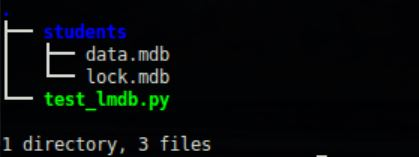

安装
LMDB和SQLite/MySQL等关系型数据库不同，属于key-value数据库（把LMDB想成dict会比较容易理解），键key与值value都是字符串。
1 | $ pip install lmdb |
操作
概况地讲，操作LMDB的流程是：
- 通过env = lmdb.open()打开环境
- 通过txn = env.begin()建立事务
- 通过txn.put(key, value)进行插入和修改
- 通过txn.delete(key)进行删除
- 通过txn.get(key)进行查询
- 通过txn.cursor()进行遍历
- 通过txn.commit()提交更改
例程
1 | #!/usr/bin/env python |
运行一下，查看当前目录的变化：
可以看到当前目录下多了students目录，里面有data.mdb和lock.mdb两个文件。
1 | import lmdb |
插入与修改都用put实现，删除用delete实现。注意用txn = env.begin()创建事务时，只有write=True才能够写数据库。一定要txn.commit()提交更改！！！一定要txn.commit()提交更改！！！一定要txn.commit()提交更改！！！
1 | import lmdb |
查单条记录用get(key)，遍历数据库用cursor。